Menu Impostazioni
Il menu Impostazioni è diviso in diverse sezioni, descritte di seguito.
Impostazioni generali
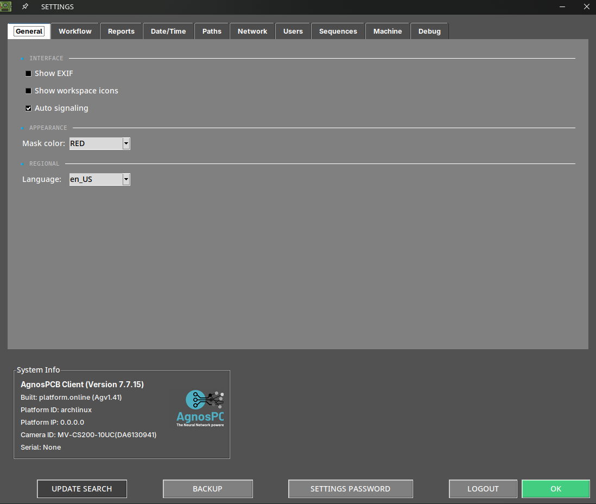
Mostra exif
Mostra i metadati dell'immagine corrente nell'area di lavoro principale.
Mostra icone dell'area di lavoro
Abilita una serie di funzioni nell'area di lavoro principale. Per maggiori informazioni su queste funzioni, consultate la sezione successiva.
Segnalazione automatica
Per impostazione predefinita, il software numera ogni errore dopo l'ispezione. Disabilitando questa opzione, viene evidenziata a colori solo l'area interessata, senza numero.
Colore della maschera
Questa opzione consente di cambiare il colore dell'errore contrassegnato. Quando il colore dell'errore contrassegnato coincide con quello della PCBA, è consigliabile scegliere un colore a contrasto maggiore per rendere più visibili le aree contrassegnate.
Mostra statistiche e mappa di calore degli errori per Riferimento
Aggiunge al pannello informazioni del Riferimento le statistiche di ispezione del RIFERIMENTO caricato e una mappa di calore dei punti in cui le sue schede presentano difetti. Disabilitata per impostazione predefinita.
Le statistiche vengono raccolte anche mentre questa opzione è disabilitata, quindi lo storico è già disponibile quando la si abilita. Le ispezioni eseguite prima della versione 7.10 non sono incluse.
Lingua
Cambia la lingua dell'interfaccia. Le lingue attualmente disponibili sono: inglese, francese, tedesco, italiano e spagnolo.
Opzioni del flusso di lavoro
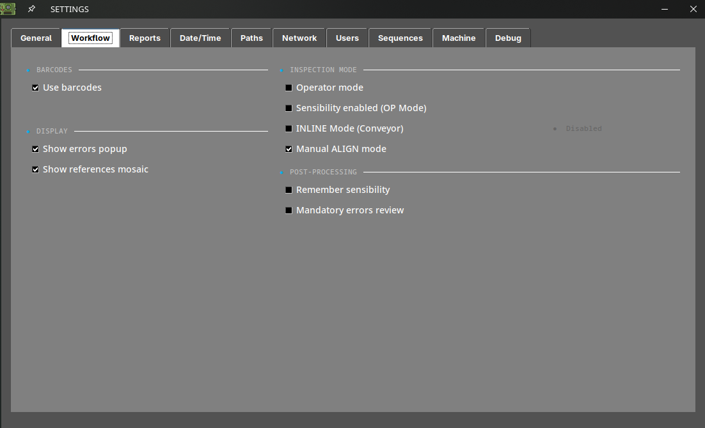
Usa codici a barre
Attiva o disattiva la funzione di lettura dei codici a barre.
Mostra finestra degli errori
Disabilitando questa opzione, la finestra di segnalazione non comparirà più quando si segnala un errore con i tasti freccia SU o GIÙ. Gli errori segnalati verranno generati con l'etichetta "other" nel report PDF finale.
Mostra mosaico dei riferimenti
Disabilitando questa opzione, il menu a mosaico non comparirà dopo l'acquisizione di un'immagine di RIFERIMENTO.
Modalità operatore
Abilitando questa opzione verranno nascoste diverse funzioni dell'interfaccia, semplificando l'uso del software. Impedisce inoltre all'operatore di cambiare l'immagine di RIFERIMENTO o la sensibilità delle ispezioni. È possibile aggiungere una password affinché solo l'amministratore possa disabilitare questa opzione.
Sensibilità abilitata
Consente di modificare la sensibilità quando il software è in modalità operatore.
Modalità INLINE
Selezionate questa modalità quando l'AOI è installata su un nastro trasportatore. Per maggiori informazioni su questa funzionalità, consultate la sezione seguente: Integrazione in linea di produzione
Modalità di allineamento manuale
Abilitate questa opzione per allineare manualmente le immagini di RIFERIMENTO e UUI. Per maggiori informazioni su questa funzionalità, consultate la sezione seguente: Strumento di allineamento manuale
Ricorda sensibilità
Attivando questa opzione, il software manterrà la sensibilità di ispezione configurata dopo aver eseguito una nuova ispezione.
Revisione obbligatoria degli errori
Se questa opzione è abilitata, il software non avvierà una nuova ispezione finché tutte le rilevazioni di quella corrente non saranno state esaminate: segnalate come errore o come falso positivo, oppure almeno contrassegnate come seen.
Segnalazione obbligatoria degli errori
Se questa opzione è abilitata, ogni rilevazione deve essere classificata come errore o come falso positivo prima che possa iniziare una nuova ispezione. Contrassegnarla come seen non è sufficiente. Include la revisione descritta sopra.
Report finale obbligatorio
Se questa opzione è abilitata, l'operatore deve confermare il report finale OK / NON OK dell'ispezione prima che ne possa iniziare una nuova. Un report generato automaticamente da Report automatico non viene conteggiato.
Dove si applicano queste tre opzioni
Queste opzioni si applicano a tutti solo mentre il controllo di accesso utenti è disabilitato. Quando è abilitato, le tre caselle di controllo appaiono in grigio e ogni ruolo ha invece la propria impostazione. Anche un RIFERIMENTO può richiederne una qualsiasi, chiunque ispezioni con esso. Consultate Livelli di revisione obbligatoria per sapere come si combinano.
Avvisa se un lato non è stato esaminato
Prima che inizi la scheda successiva, il software vi avvisa se un lato della scheda corrente presenta rilevazioni ma nessuna di esse è stata esaminata o segnalata, e vi permette di continuare (OK) o di tornare indietro (CANCEL). È un avviso, non un blocco. Abilitata per impostazione predefinita. Consultate Livelli di revisione obbligatoria.
Cambio automatico TOP/BOTTOM
Per i RIFERIMENTI a doppia faccia, abilitando questa opzione si passa automaticamente all'altro lato (TOP/BOTTOM) all'inizio dell'ispezione successiva, senza bisogno di un cambio manuale.
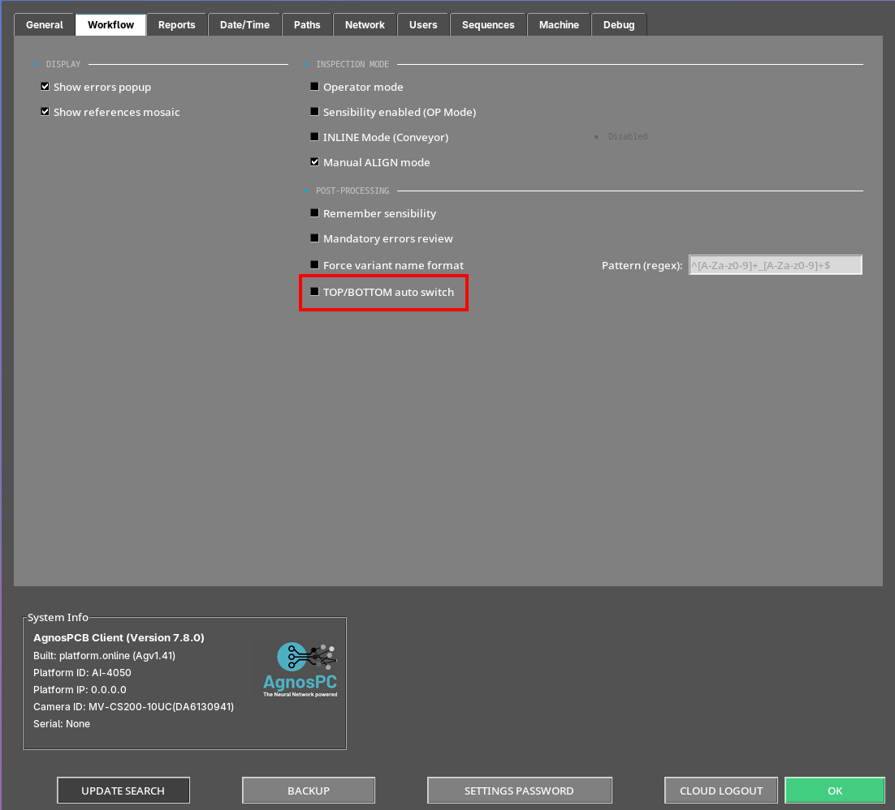
Preferenza di analisi
Imposta dove esaminare le rilevazioni dopo un'ispezione:
- LIST (predefinita sulle nuove installazioni): il cursore va alla prima riga dell'elenco delle rilevazioni. I tasti freccia sinistra e destra si spostano lungo l'elenco e i tasti freccia su e giù classificano la riga sotto il cursore come errore o come falso positivo.
- CANVAS: il cursore va alla prima rilevazione sull'immagine e i tasti freccia si spostano tra le rilevazioni sull'immagine.
Le installazioni aggiornate da una versione precedente mantengono il valore che avevano già.
Max. varianti per Riferimento
Numero massimo di Varianti di riferimento utilizzate per ogni RIFERIMENTO: 20 per impostazione predefinita, fino a 50. Aumentandolo viene mostrato un avviso, perché il pannello delle varianti e l'ispezione diventano più lenti con più varianti. Un RIFERIMENTO che ha più varianti del limite utilizza solo le prime; le altre vengono conservate intatte.
Modalità Demo / Loop
Dopo che l'operatore ha eseguito manualmente la prima ispezione, il software continua a ripetere automaticamente l'acquisizione e l'ispezione. È pensata per dimostrazioni non presidiate.
- Si disattiva da sola alla chiusura dell'applicazione, quindi l'avvio successivo avviene sempre in modalità normale.
- Mentre è attiva, nessuno dei livelli di revisione obbligatoria è richiesto.
- Selezionando una qualsiasi delle tre opzioni obbligatorie descritte sopra questa modalità viene deselezionata, e viceversa.
- Con il controllo di accesso utenti abilitato, solo il ruolo admin può modificarla.
Importante
Esecuzioni non presidiate prolungate con sequenze di acquisizione molto grandi (12 o più immagini) possono esaurire la memoria del computer. Evitate di lasciare in ciclo sequenze molto grandi per lunghi periodi.
Opzioni del report
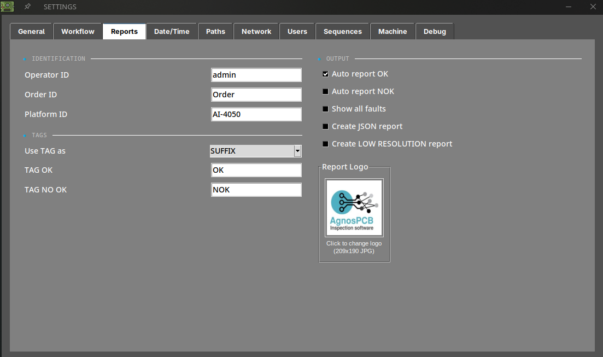
ID operatore
Imposta un ID per l'operatore corrente. Questo ID verrà visualizzato nel report PDF finale al termine dell'ispezione.
ID ordine
Imposta un ID per l'ordine di produzione corrente. Questo ID verrà visualizzato nel report PDF finale al termine dell'ispezione.
ID piattaforma
Imposta un ID per l'AOI.
Usa TAG come
Imposta il TAG (OK o NOK) del report PDF finale come suffisso o prefisso del nome del file.
TAG OK
Imposta un TAG OK personalizzato per il report PDF finale.
TAG NO OK
Imposta un TAG NO OK personalizzato per il report PDF finale.
Report automatico
Quando questa opzione è abilitata, verrà generato automaticamente un report PDF finale etichettato come OK se non vengono rilevati errori dopo l'ispezione. Il report PDF finale può essere generato anche se vengono rilevati errori durante l'ispezione.
Nota
Quando si genera automaticamente un report PDF, tutti gli errori rilevati vengono contrassegnati con l'etichetta "unknown". Un report automatico non viene conteggiato come report finale confermato ai fini del Report finale obbligatorio.
Mostra tutti i difetti
Mostra tutti gli errori rilevati nel report PDF anche se l'operatore non li ha segnalati.
Crea report JSON
Genera un file JSON leggibile da una macchina con i dati dell'ispezione, in aggiunta al report PDF. Utilizzate questa opzione quando i risultati devono essere elaborati da un altro sistema — un MES, un ERP o un database di tracciabilità — invece di essere letti da una persona.
Il file JSON viene scritto nella stessa cartella del report PDF, all'interno della directory PCB OUT.
Nota
Questa è una funzione con licenza. Se l'opzione non genera alcun file, contattate support@agnospcb.com per verificare se il vostro profilo account la include.
Crea report a BASSA RISOLUZIONE
Genera un report PDF aggiuntivo con dimensioni di file ridotte. Il report standard continua a essere generato: questa opzione aggiunge una copia più leggera, non lo sostituisce.
È utile quando i report devono essere inviati per e-mail, archiviati a lungo termine o trasferiti tramite una connessione lenta o limitata, dove le immagini a piena risoluzione renderebbero il file troppo grande.
Logo
Imposta un logo per il report PDF.
Opzioni data/ora
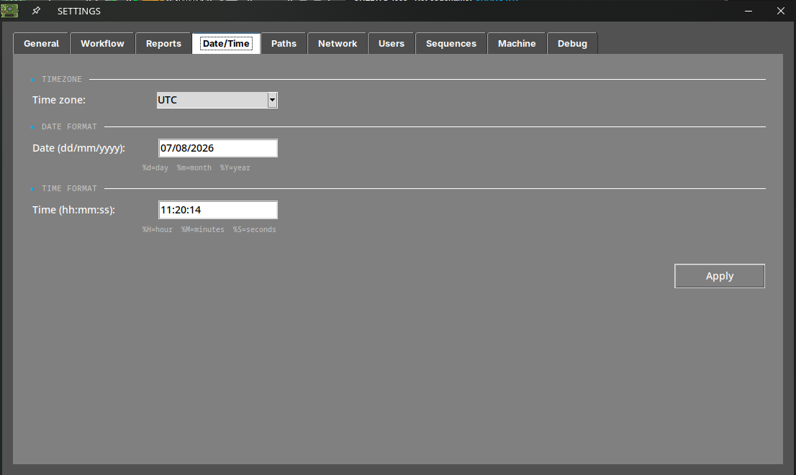
Fuso orario
Imposta il fuso orario.
Data e ora
Imposta il giorno e l'ora.
Nota
Per applicare le modifiche premete il pulsante SET e riavviate il sistema.
Opzione percorso
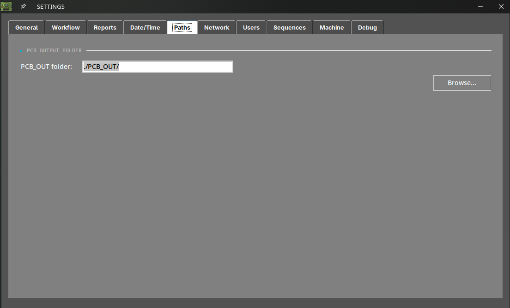
PCB OUT
Cambia il percorso in cui vengono generate le ispezioni.
Opzioni di condivisione
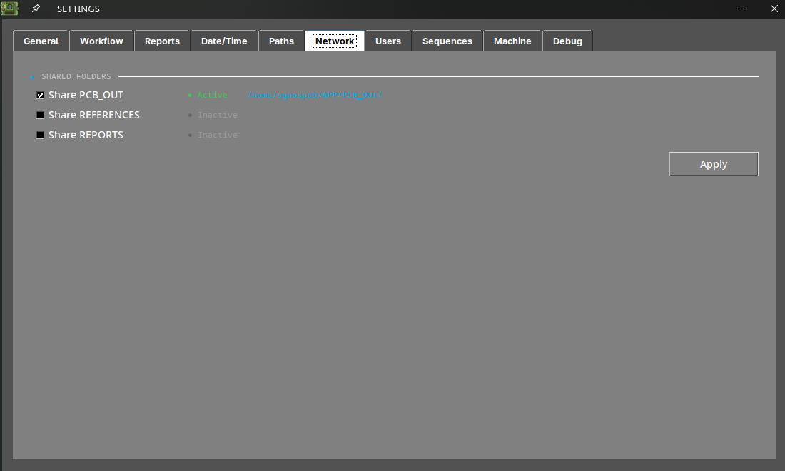
Condividi cartelle
Abilitando queste opzioni, il sistema condividerà automaticamente le cartelle PCB_OUT e REFERENCE sulla rete locale. L'indirizzo di accesso verrà visualizzato una volta impostata l'opzione.
Nota
Per applicare le modifiche premete il pulsante Apply.
Nota
Per le unità OFFLINE, se dovete cambiare l'interfaccia di rete della vostra unità, consultate l'articolo sulla configurazione di rete.
Utenti
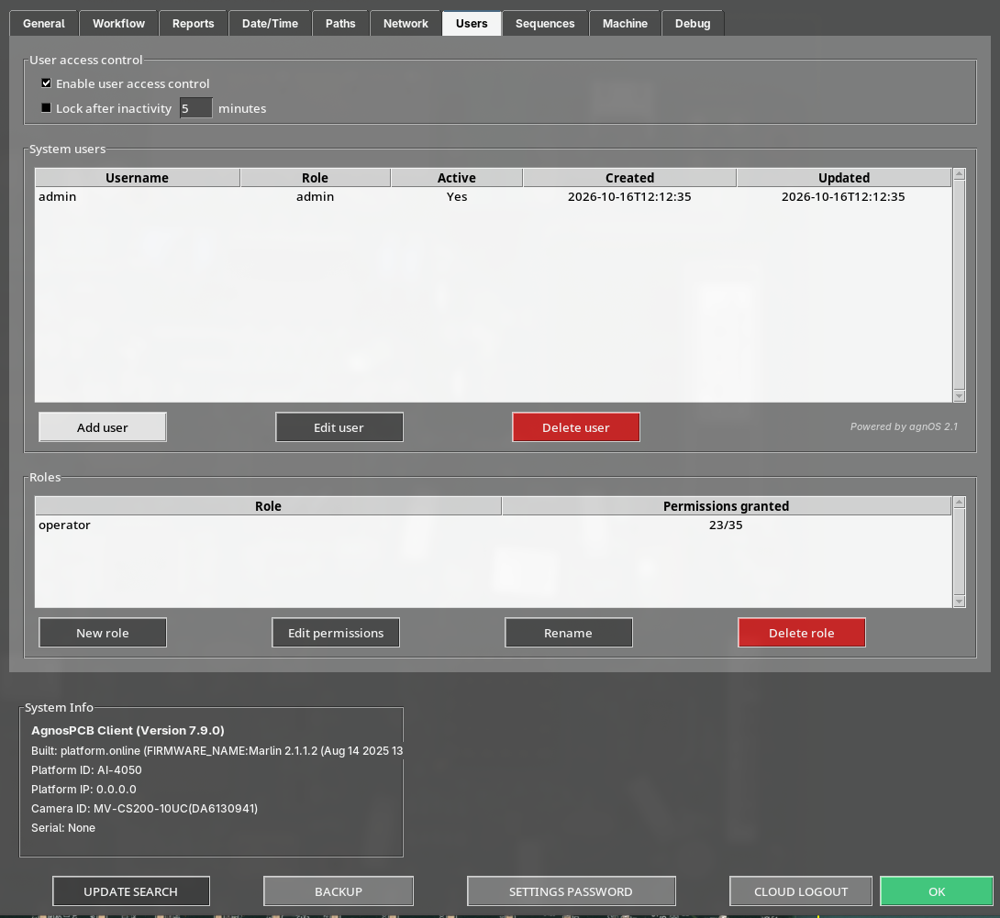
Questa scheda è disponibile solo per gli utenti con ruolo admin, oppure con un ruolo a cui è stato concesso l'accesso. Consente di creare gli account che possono utilizzare l'AOI, di definirne ruoli e permessi, e di richiedere nome utente e password ogni volta che il software viene avviato.
Per abilitare Enable user access control deve esistere almeno un account admin attivo.
Per maggiori informazioni su questa funzionalità, consultate la sezione seguente: Controllo accessi utenti
Sequenze
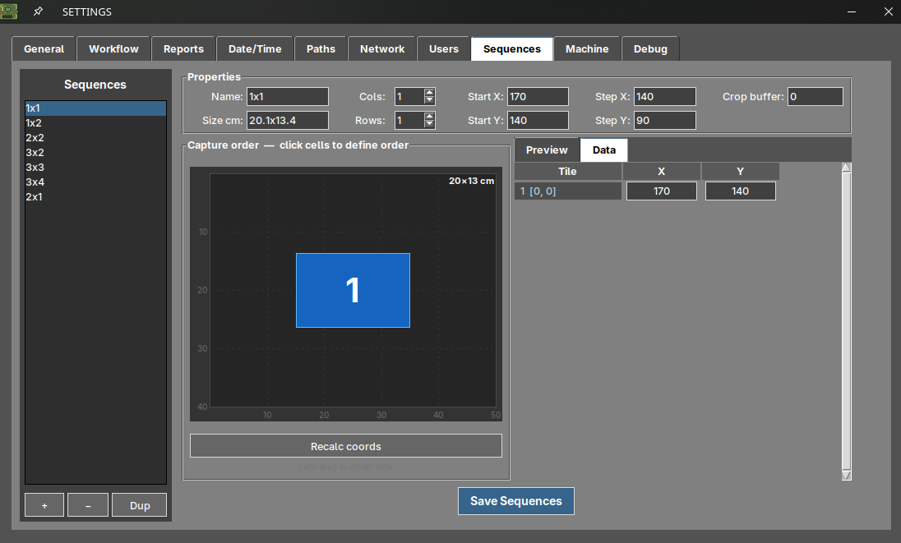
Questa scheda è disponibile solo per gli utenti con ruolo admin. Consente di definire le vostre sequenze di acquisizione, ovvero la griglia di fotografie che la telecamera scatta e unisce per comporre l'immagine di una scheda grande.
Utilizzatela quando nessuna delle sequenze predefinite si adatta correttamente alla vostra scheda. Le sequenze salvate qui appaiono come opzioni CUSTOM nella finestra di anteprima dal vivo quando si acquisisce un RIFERIMENTO o si avvia un'ispezione.
Per maggiori informazioni su questa funzionalità, consultate la sezione seguente: Sequenze di acquisizione personalizzate
Nota
Questa scheda non viene visualizzata sulle unità configurate in modalità Q1, che eseguono una sola acquisizione.
Macchina
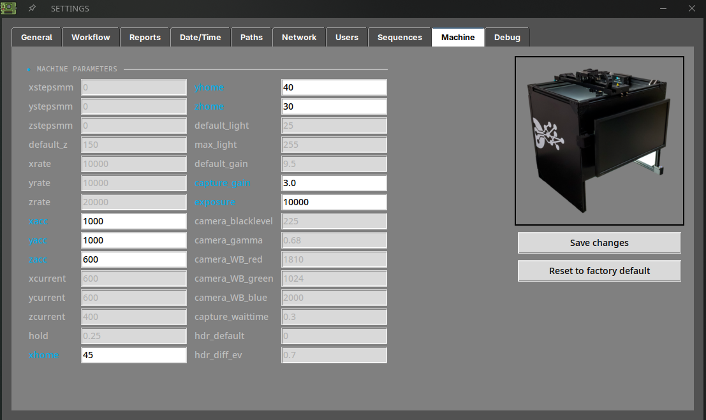
Questa scheda è disponibile solo per gli utenti con ruolo admin. Mostra i parametri hardware modificabili della vostra unità, memorizzati nel file machine.json, raggruppati in base a ciò su cui influiscono e ciascuno con una breve spiegazione:
| Gruppo | Campo | Descrizione |
|---|---|---|
| Movimento | Acceleration (X / Y / Z) | Accelerazione di ciascun asse. Valori più alti rendono il movimento più rapido, ma possono causare perdita di passi o vibrazioni. |
| Movimento | Homing sensitivity (X / Y / Z) | Il modo in cui ciascun asse rileva di aver raggiunto la posizione di origine. |
| Telecamera | Capture gain | Guadagno della telecamera durante l'acquisizione. Valori più alti schiariscono l'immagine ma aggiungono rumore. |
| Telecamera | Exposure (µs) | Tempo di esposizione della telecamera. Valori più alti fanno entrare più luce ma aumentano il rischio di sfocatura dovuta alle vibrazioni. |
| Telecamera | Rotate image 180° | Ruota l'immagine della telecamera di 180°. Abilitatela solo se la telecamera è montata capovolta. |
Premete Save changes per memorizzare i nuovi valori, oppure Reset to factory default per ripristinare tutti i parametri al valore originale.
Nota
Le modifiche non vengono applicate immediatamente. Riavviate l'applicazione affinché i nuovi valori abbiano effetto.
Importante
Questi parametri influiscono sul movimento della piattaforma e sull'acquisizione delle immagini. Modificarli in modo errato può degradare la qualità dell'immagine o il movimento degli assi. Modificateli solo quando il supporto ve lo richiede.
Nota
Questa scheda non viene visualizzata sulle unità senza piattaforma XYZ.
Debug
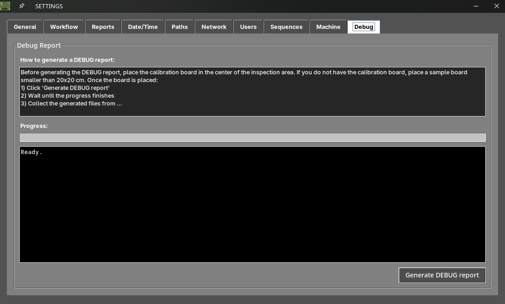
Questa scheda è disponibile solo per gli utenti con ruolo admin. Genera un report diagnostico che consente al nostro team di supporto di analizzare il comportamento della vostra unità.
Per generarlo:
- Posizionate la scheda di calibrazione al centro dell'area di ispezione. Se non ne disponete, utilizzate una scheda di prova più piccola di 20x20 cm.
- Premete Generate DEBUG report.
- Attendete il completamento della barra di progresso. L'area di testo sottostante mostra l'avanzamento del processo.
- Raccogliete i file generati e inviateli a support@agnospcb.com.
Sezione informazioni
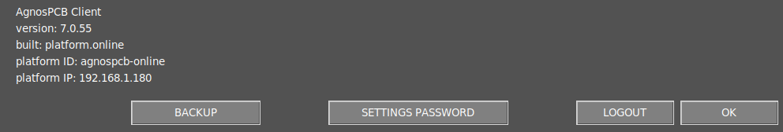
Informazioni AOI
Le informazioni dell'AOI vengono visualizzate in questa sezione.
Backup
Questa funzione genera automaticamente un file compresso di backup della cartella PCB_OUT. Il file di backup viene salvato nella cartella APP/BACKUP.
Password impostazioni
Imposta una password per accedere al menu Impostazioni.
Nota
Lasciate la password vuota per disabilitare la richiesta di password.